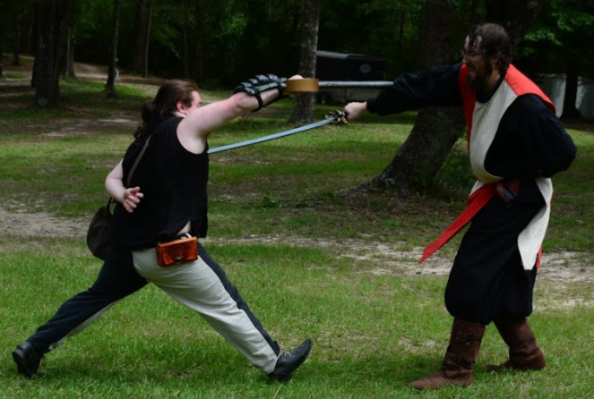

Latest Chronicle Update
I hope these words find you well. I thought I would get used to 'em, I did. The screams. This place seems wrong somehow. Moreso than the broken world already made it. The city itself is the badness that is suckin' the life from us. I rather the rippas' any day over some of the new screams I have heard as of late. Warlords and monsters crash at our gates and are found wanting. Yet the screams of the innocent being burned alive over false claims, these shake an old man to his bone. Noble, strong men and women wander, lost to the real, crawling, seetheing intent bubbling below. And where do we put our hopes? In the Guilds that control us? Bloody handprints on the wall? The monster in men's skin that people call heroes? I think not, their deeds swap the sheep, but not I, Mother. I have found him. The one who will deliver this city from itself. Only he can rip the infection of heroes from the near dead corpse of this city. While the people cheer the heroes, they dig up their own doom. Oh happy dad, Mother. I come to meet you soon.
I am not fooled. ~Yo'Teh Renart.
